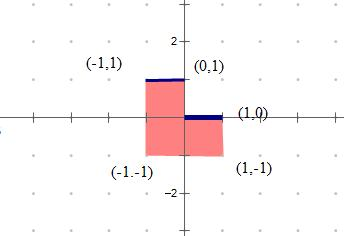

HDU4580. Worm
内存限制：3000/1000 MS (Java/Others) 时间限制：65535/32768 K (Java/Others)
题目描述
Guy is a flying worm. A gun men are hunting him. Guy can't keep running all the time . At night ,he has to find a place to sleep, and that's very dangerous. In the sky, there are many flying rocks, Guy decides to stay on those rocks at night. The good thing is that the gun man is stupid, he always fire toward a fixed direction. And Guy knows the direction. Guy wants to find a place on a certain rock so that the rock can protect him best from the bullets. The more distance a bullet has to travel inside the rock to reach Guy, the safer is Guy. Please find the safest place for Guy.
Guy's world is a 2D plane. A rock can be consider as a polygon. Guy can just stay on the edge of the rock, he can't get inside a rock. Guy stands on a rock ,but he can't hang on a rock. As shown below, Guy can stay on point B,C and D, but he can't stay on point A,E,F and G because if he stay there, he will fall down to the ground when he get asleep.

The direction of the gun fire can be described as a vector (dx, dy). The gun man is infinite far away, and he can choose any infinite far away point as the firing position. In other words, the bullet may fly along any straight line which is parallel to the vector (dx,dy).
Guy's world is a 2D plane. A rock can be consider as a polygon. Guy can just stay on the edge of the rock, he can't get inside a rock. Guy stands on a rock ,but he can't hang on a rock. As shown below, Guy can stay on point B,C and D, but he can't stay on point A,E,F and G because if he stay there, he will fall down to the ground when he get asleep.
The direction of the gun fire can be described as a vector (dx, dy). The gun man is infinite far away, and he can choose any infinite far away point as the firing position. In other words, the bullet may fly along any straight line which is parallel to the vector (dx,dy).
输入格式
First Line is an integer T <=20, means the number of test cases.
In each test cases, the first line is one integer m describing the number of polygons.
Then m polygons follow. Each Polygon P starts with an integer n as the number of vertex of P. after that there are n lines, each line is an integer pair (x, y) , meaning a vertex of P, in clockwise or counter-clockwise order.
The last line of each test case is two integers dx, dy, meaning that vector (dx,dy) is the direction of the gun fires.
The sum of the vertexes number of all polygons is smaller or equal to 1000.
The polygons will not intersect with each other or themselves. One polygon cannot be inside another.
There may be extra spaces and empty lines in the input data.
For more detail, see the sample input.
In each test cases, the first line is one integer m describing the number of polygons.
Then m polygons follow. Each Polygon P starts with an integer n as the number of vertex of P. after that there are n lines, each line is an integer pair (x, y) , meaning a vertex of P, in clockwise or counter-clockwise order.
The last line of each test case is two integers dx, dy, meaning that vector (dx,dy) is the direction of the gun fires.
The sum of the vertexes number of all polygons is smaller or equal to 1000.
The polygons will not intersect with each other or themselves. One polygon cannot be inside another.
There may be extra spaces and empty lines in the input data.
For more detail, see the sample input.
输出格式
Output one line for each test case ---- the distance a bullet has to travel inside the rock to reach Guy when Guy stays on the safest place. If the bullet can hit Guy directly, output “Poor guy” instead. The result must be round to 2 digits after decimal point.
样例
样例输入
3
1
6
0 0
0 1
-1 1
-1 -1
1 -1
1 0
0 1
1
6
0 0
0 1
-1 1
-1 -1
1 -1
1 0
0 -1
3
4
0 0
0 1
2 1
2 0
4
0 2
0 3
1 3
1 2
4
1 3
1 4
2 4
2 3
0 -1样例输出
2.00
Poor guy
1.00
Hint
In the first sample input, Guy could only stand on two segments: {(-1,1)-(0,1)}, and{(0,0)-(1,0)}
Notice that, Guy cannot stand on (-1,1),(0,1) and (1,0).

For the firing direction dx = 0, dy = 1, we could see that the safest place is any point on segment (-1,1) - (0,1) (except two ends). And a bullet has two travel distance 2 inside the rock to hit Guy.
Please do pay attention to the test case 2 and 3.